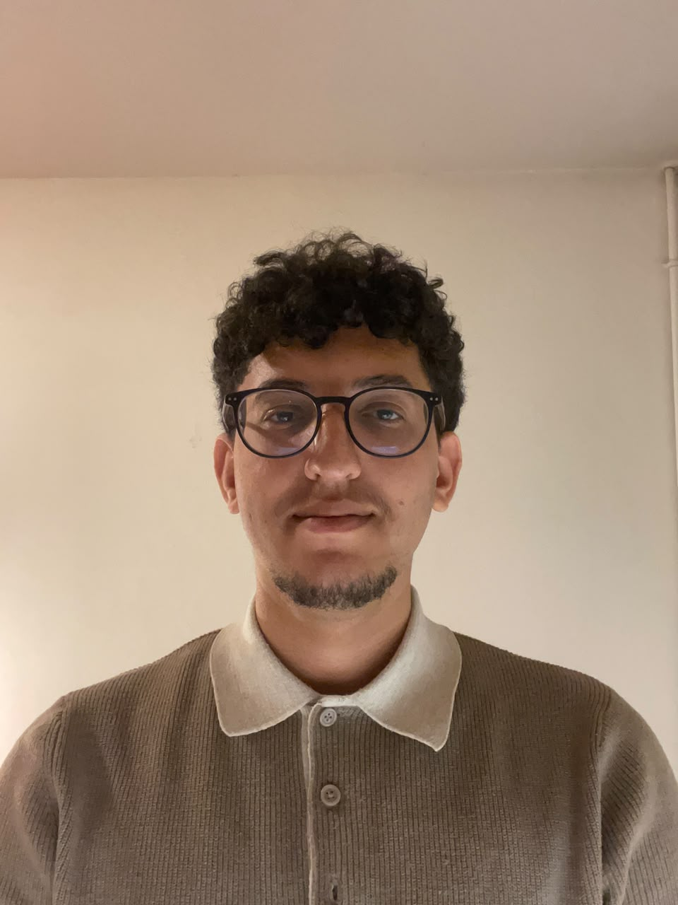

AI ENGINEERING & SOFTWARE DEVELOPMENT Brest, France +
From dataideas. to products.
I’m Abderrafea Elamri.
Explore my projects ↓ 
AE / 01 AB D E R R A F E A ELAMRI
01 / SELECTED PROJECTS
Real projects.Real code. Real purpose. From interfaces to models,
INSIGHTFORGE CONVERSATIONAL ANALYTICS
Overview SALES / DEMO
Revenue 128 450 €
Orders 1 284
Average order 100 €
+ “Show me sales trends.” ↵
Product illustration · sample data 01 — AI & DATA PERSONAL PROJECT
InsightForge One question. One dashboard.
LangGraph FastAPI React PostgreSQL
AGENT EXCEL DATA → DIALOGUE
A B C 01 Client Sales Change 02 Company A 24 800 +12,4 % 03 Company B 18 250 −8,2 % 04 Company C 32 100 +21,6 %
Product illustration · sample data 02 — CONVERSATIONAL AGENT GEODEMAT
Agent Excel Ask questions about your files, understand sales and identify at-risk customers. In natural language.
Groq Python Angular Docker
Explore the project ↗ RECRUITMENT PLATFORM CONNECTED BY DESIGN
React INTERFACE
API Gateway JWT / SPRING CLOUD
RABBITMQ ──────── NOTIFICATIONS
03 — FULL STACK VPI INFO
Recruitment, connected. A distributed recruitment platform, from publishing job openings to tracking applications.
Spring Boot React RabbitMQ
Explore the project ↗ 04 COMMERCE & WEB DEVELOPMENT E-commerce, end to end. Catalogue, cart, orders and administration.
Vue.js Express MongoDB
↗ All my projects on GitHub ↗ 02 / ABOUT Driven bycuriosity. RABAT ———————— BREST
I like understanding how things work. And building what comes next.
As a dual-degree student at ENSAM Rabat and the University of Western Brittany, I bring together data science, artificial intelligence and software engineering.
My projects explore one question: how can intelligent systems be useful in practice? Whether I’m building conversational agents, RAG systems, fine-tuning models or developing complete applications, I care about both the engineering and the experience of the people using them.
01 Artificial intelligence AI agents · RAG · LangGraph · LlamaIndex · LoRA / PEFT · Transformers
02 Software development Python · Java · FastAPI · Spring Boot · React · Angular · TypeScript
03 Data & infrastructure PostgreSQL · Pandas · NumPy · RabbitMQ · Docker · CI/CD
Experience JUNE — AUGUST 2026 AI Engineer Internship GEODEMAT ↗ Built Agent Excel: conversational analytics, visualisations, at-risk customer detection and scheduled reports.
JUNE — AUGUST 2025 Full Stack Developer Internship VPI INFO ↗ Built a recruitment platform with microservices: secured APIs, a React interface and asynchronous notifications.
Certifications Hugging Face AI Agents Course Hugging Face Machine Learning Specialization Stanford University · Coursera Python for Data Science IBM · Coursera Education 2026 — PRESENT Master’s degree, Year 2 — DOSI University of Western Brittany · Brest Software Development for Information Systems. Dual-degree programme.
2024 — PRESENT Engineering degree — Data Science & AI ENSAM · Rabat Engineering programme in Data Science and Artificial Intelligence.
2022 — 2024 Integrated preparatory programme ENSAM · Rabat 2022 Baccalaureate in Physical Sciences Al-Ghazali High School · Morocco Graduated with highest honours (Très Bien).